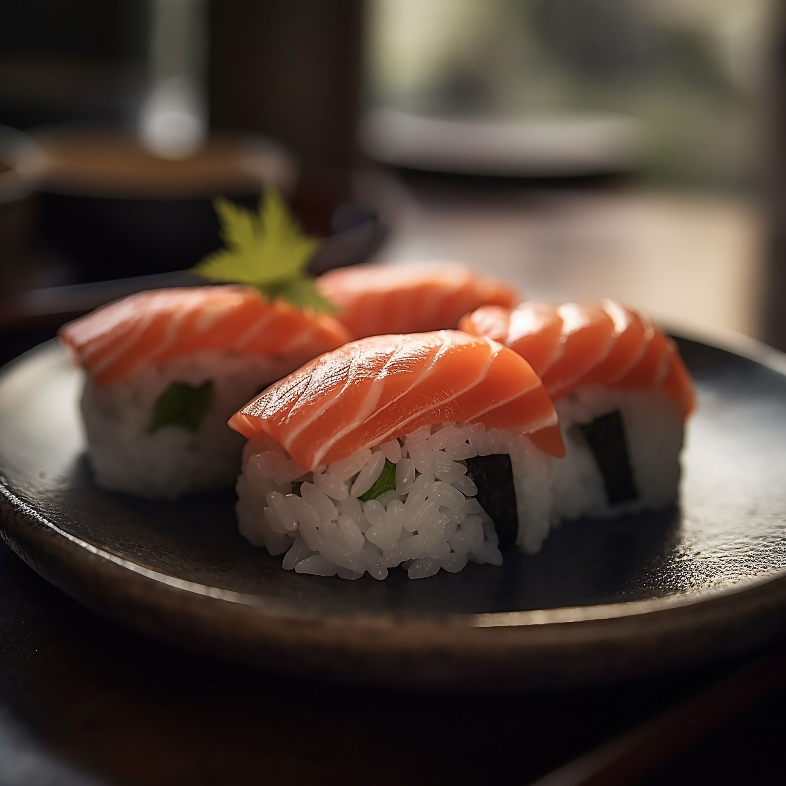
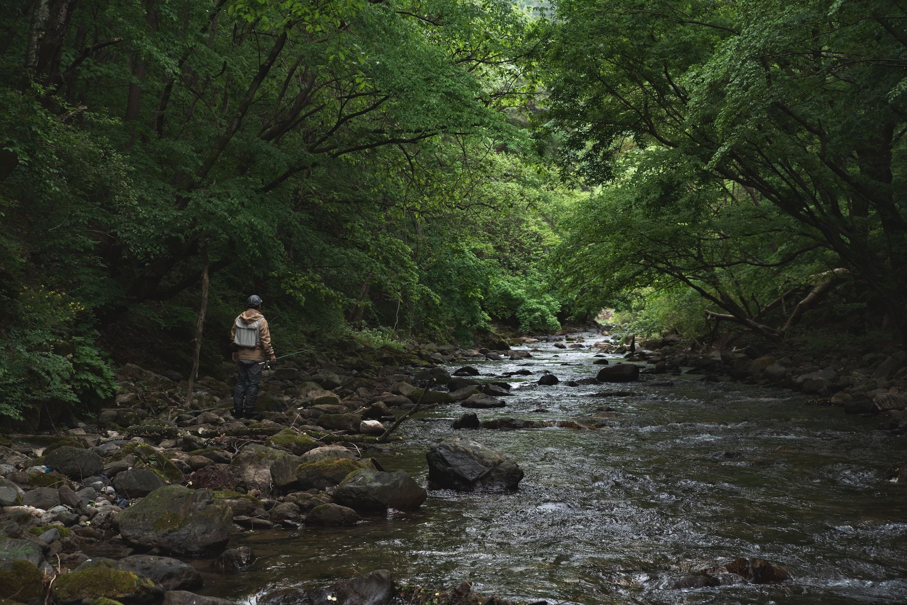
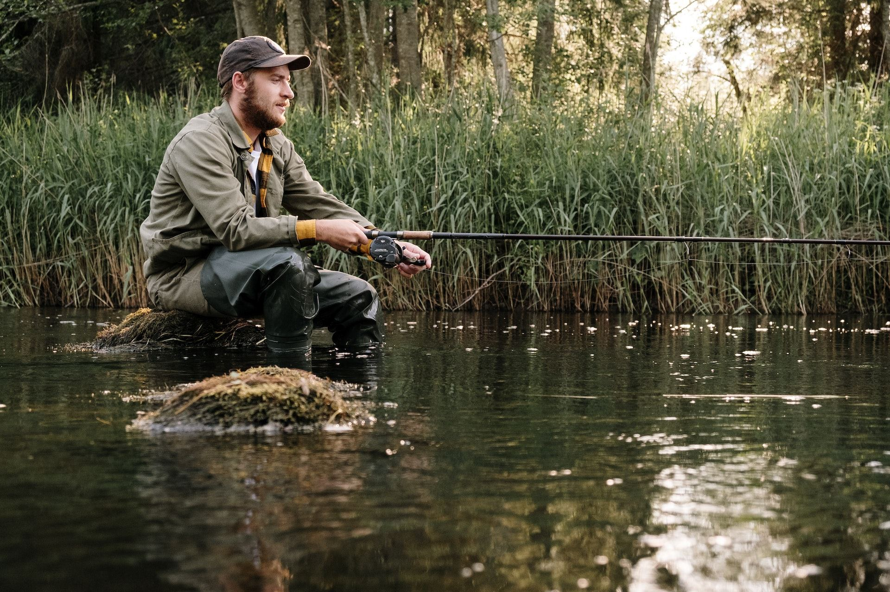
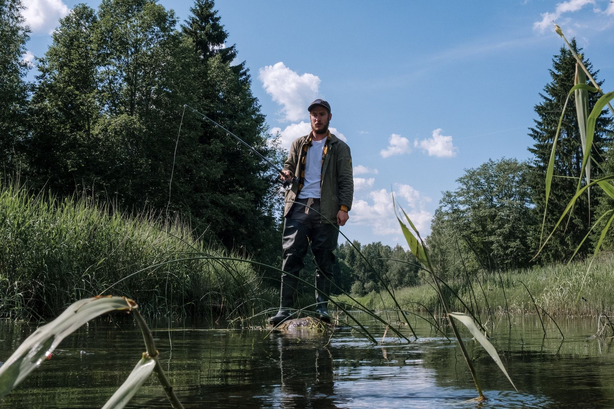
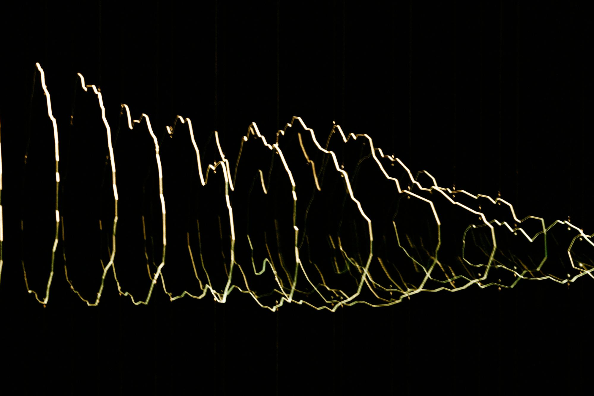
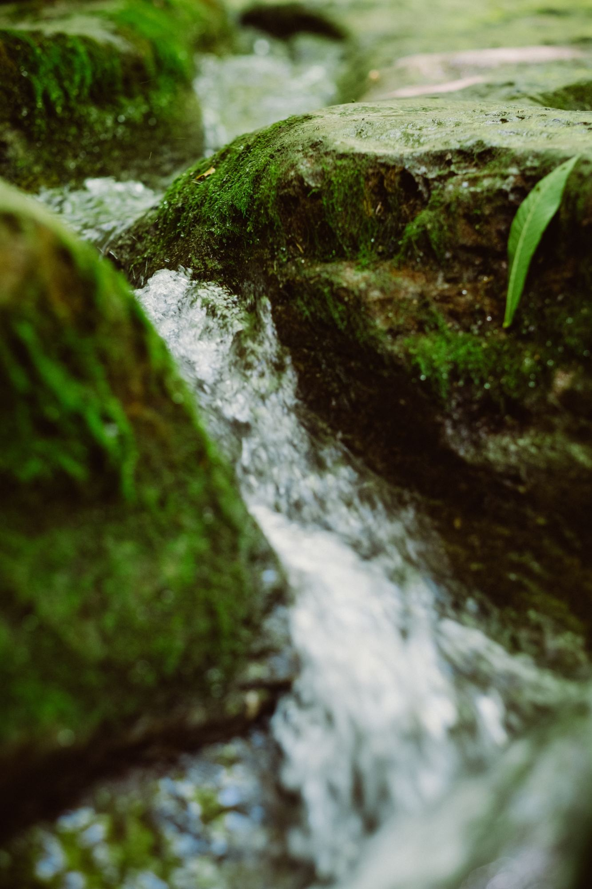

GastronomieShogun Sushi, Chartres
Le premier restaurant japonais de Chartres : sushis, makis et salle traditionnelle où l’on mange assis sur des coussins.
Lire l’article
Sport · Aube
Un sport national
Dans l’Aube, la pêche est comme un sport national, de plus en plus pratiqué par les jeunes qui veulent entretenir et préserver l’environnement.
L’AAPPMA de l’Aube est très proche de l’environnement et organise souvent des stages de sensibilisation afin d’apprendre les bonnes valeurs et les bonnes pratiques à avoir au bord de l’eau. À l’ouverture de la pêche, elle organise également une journée dépollution où tous les adhérents sont invités à ramasser les déchets pour préserver les plans d’eau.

No kill
En complément de ces stages, et pour garantir la survie des poissons de nos régions, l’association organise des journées découvertes afin d’enseigner les bonnes pratiques de capture. Elle incite à la pêche « no kill », qui consiste à relâcher le poisson vivant dans le meilleur état de santé possible.
Des journées écrevisses sont aussi organisées pour débarrasser nos rivières et nos étangs des écrevisses de Louisiane, qui dévorent notre flore aquatique mais aussi nos berges.

Un petit instant au bord d’un lac avec quelques amis ou la famille, pour se ressourcer et se rapprocher de la nature.
Je vous conseille de venir profiter de nos cours d’eau, de nos lacs et de nos étangs. Nous avons de très belles rivières pleines de perches, de brochets et de truites, mais aussi l’Yonne et la Seine, qui abritent elles aussi une grande diversité aquatique.
Continuer la lecture

GastronomieLe premier restaurant japonais de Chartres : sushis, makis et salle traditionnelle où l’on mange assis sur des coussins.
Lire l’article
ArtUn voyage dans la région bordelaise à travers ses secrets, son histoire, son art et son architecture.
Lire l’article
ÉcologieUn tour d’horizon libournais des acteurs qui réparent, recyclent et revalorisent au quotidien.
Lire l’article